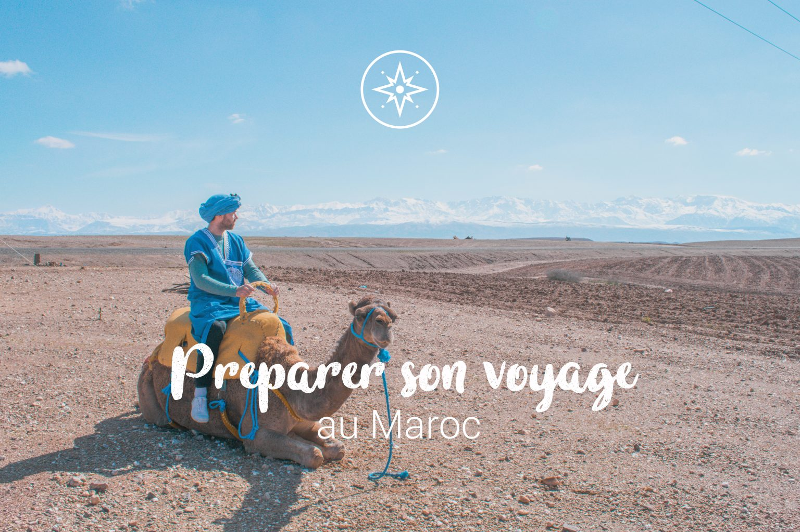

Que faire au maroc ?

Quels activités pour découvrir le Maroc ?
Balade en quad dans les dunes de sable
camping dans le desert
vol en montgolfière classique
visite gastronomique a Marrakech
Les meilleures périodes pour aller au maroc
Quel budget prévoir pour visiter Minorque en 1 semaine ?
Avion
Hotel
Restaurant
voiture
500 dt
2000dt
500dt
1000dt
Totale:
4000dt